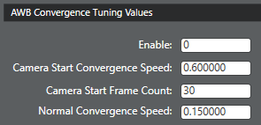

Use the procedures in this section to fine-tune the temporal convergence
parameters.
-
Open the project and click the AWB tab.
-
In the List View
section, select AWB Convergence.

-
In the AWB Convergence Tuning
Values pane, adjust the following parameters as needed:
- Enable
- Camera Start Convergence Speed
- Camera Start Frame Count
- Normal Convergence Speed
-
Click to save the changes.